[SH4] Henry's Stink-Response Possession Level🦨
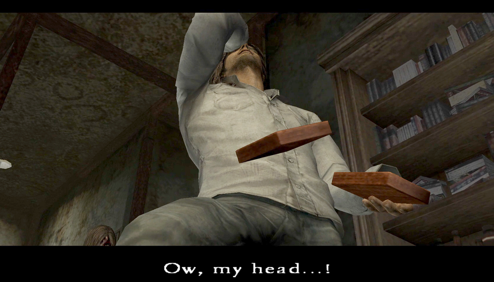
One-Second Masterpieces: His Reactions Also Change Depending on Her Possession Level
![[SH4] Henry's Stink-Response Possession Level](img/da27.png)
This is a mirror of the DeviantArt version linked above, provided as a backup and for easier access.

It's well-known that the endings and some cutscene dialogues change depending on Eileen's possession level, but the Henry acts are subtly different too.
More specifically, besides the endings, I'm talking about the scene in the apartment lobby where Eileen is holding a sketchbook, and the scene where Henry opens the umbilical cord box in the Frank's office.
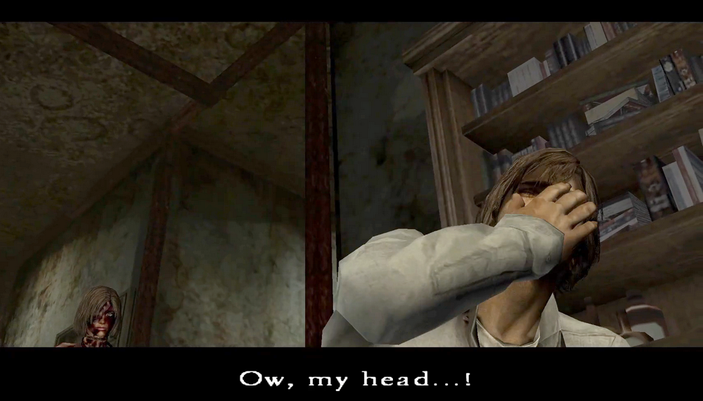
This time, I'm focusing on the exact moment the latter box is opened. His reaction changes depending on the level of possession at that point, so I like to call it Henry's "Stink-Response" Possession Level. Haha. Well, he's actually saying, "Ow, my head...!" though.
The GIFs have been slowed down to make them easier to see.
✅ Possessed Status: Low
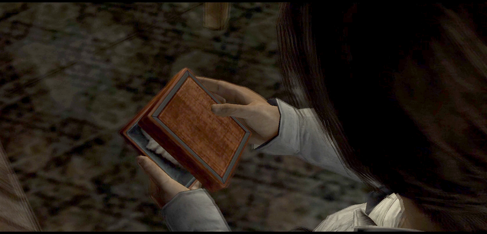
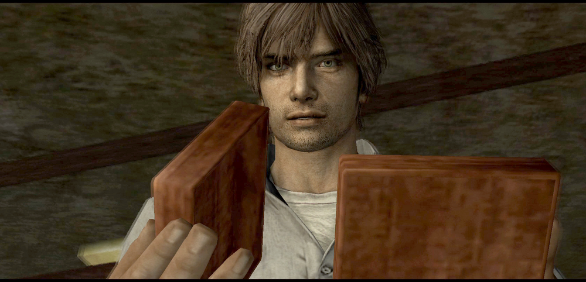
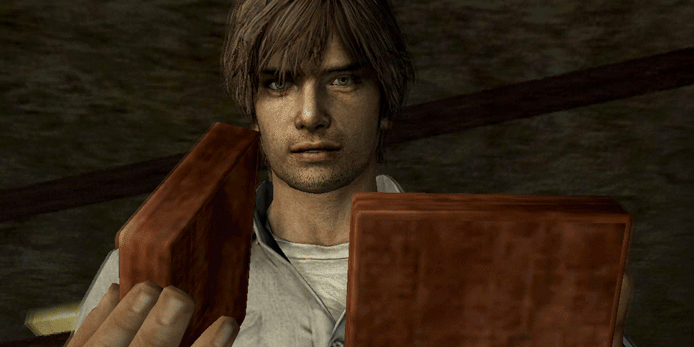
✅ Possessed Status: Medium

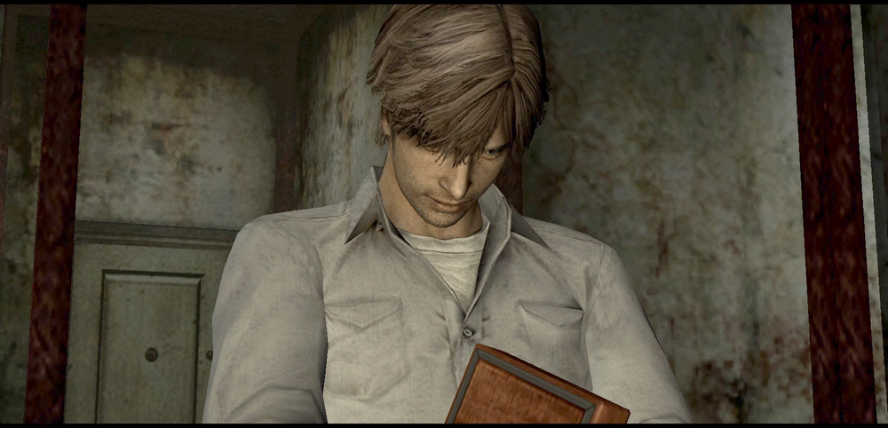
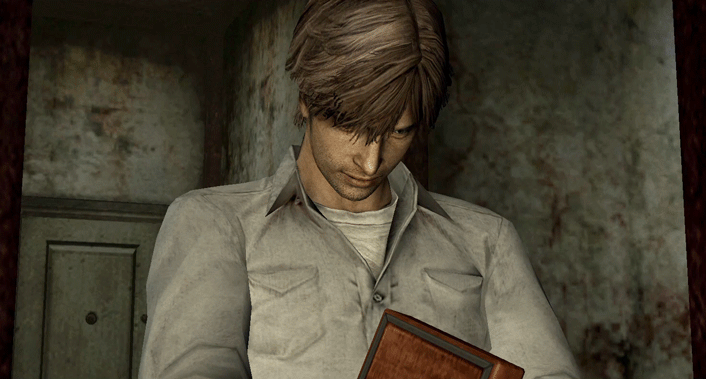
On this page, I've slowed down the footage into GIFs to make them easier to see. But since they're actually just split-second moments during the cutscene, each one is only about a second long.
For these two, you might not notice the differences just by watching normally, unless you're a total geek like me who checks them frame by frame.
✅ Possessed Status: High
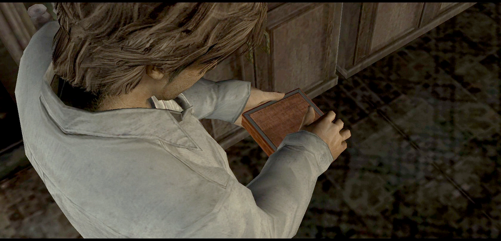
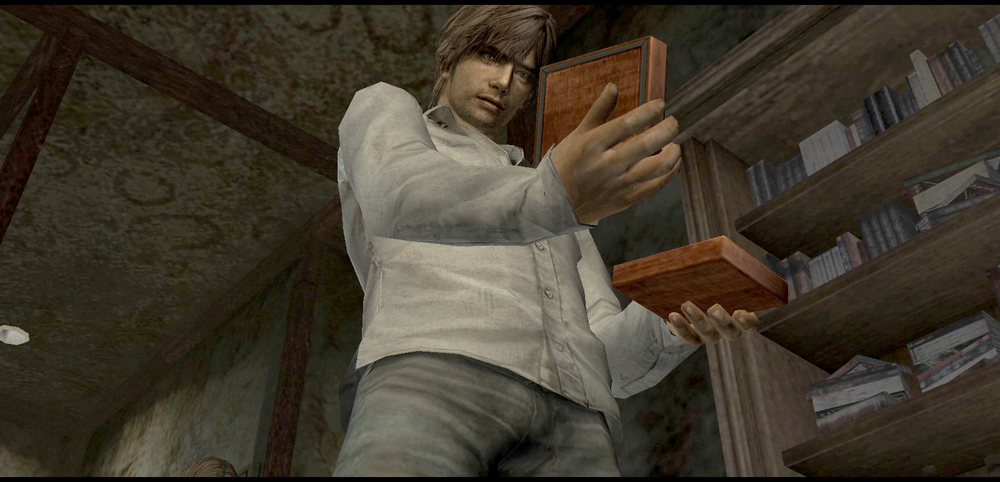
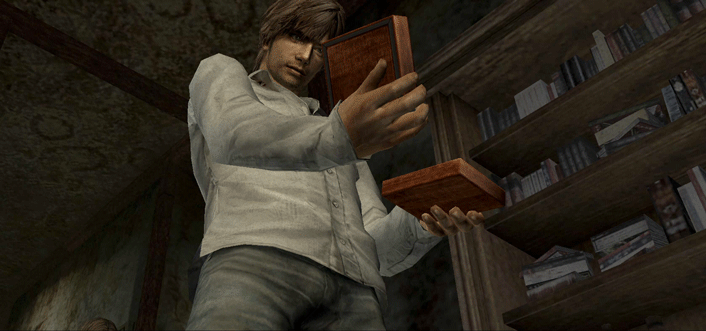
This one is noticeably different from the start. Henry dramatically collapses while standing, so it's easier to notice the difference. Was it really that stinky lol? You can't see his face clearly, but the acting is ridiculously over-the-top, and I love it.
Like I said, these are just mere moments. In reality, the whole scenes change, so there's way more to see in each version. The biggest differences are Eileen's lines and how she acts. Go ahead and compare them for yourself!
Even in these split-second scenes, I could feel how far they went with it, and that honestly got me. It's truly amazing. Literally one-second masterpieces!
So, I'll also share a behind-the-scenes story about the cutscene's creator.
-
 [SH4] Stories of Struggles in Cutscene Production
[SH4] Stories of Struggles in Cutscene Production
Vol. 7: "Stories of Struggles in Movie Production" Demo Movie: Atsushi Tsujimoto
✅ Bonus Note
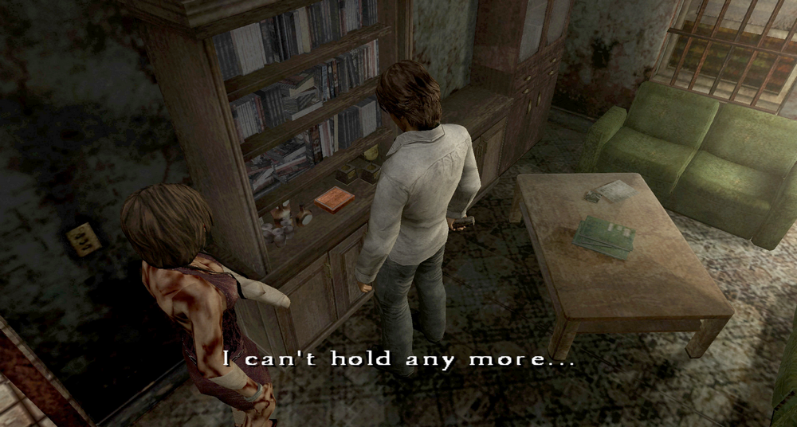
By the way, in cases where Henry's item slots are full, a message "I can't hold any more..." will appear, and the event won't trigger...
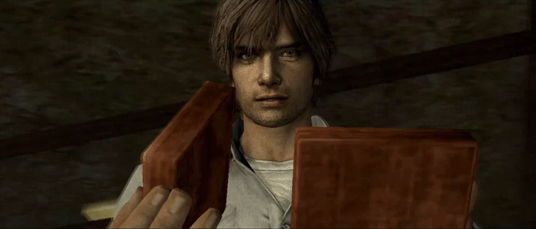